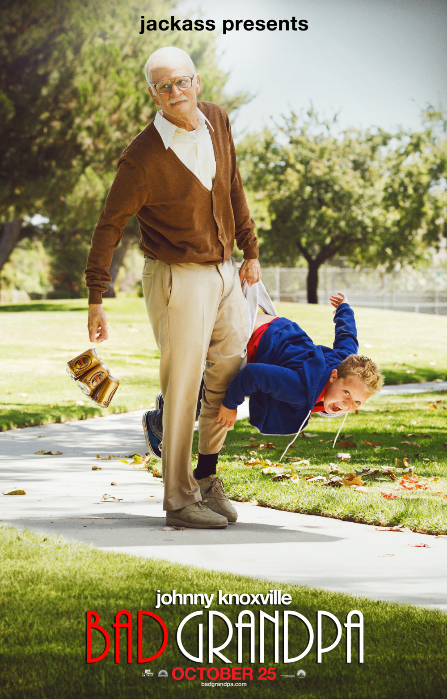

Jackass Presents: Bad Grandpa (also known as Bad Grandpa) is a 2013
American hidden camera comedy film directed by Jeff Tremaine and
written by Tremaine, Spike Jonze and Johnny Knoxville. It is the
fourth film in the Jackass franchise. The film stars Johnny
Knoxville and Jackson Nicoll[5] and it was produced by MTV Films
and Dickhouse Productions and distributed by Paramount Pictures.
The film was released on October 25, 2013. Bad Grandpa has
a loose narrative that connects the stunts and pranks together
(in a manner reminiscent of Borat, as opposed to the
three original Jackass films which did not have a story.
The film became the first installment in the Jackass film series
to be nominated for an Oscar, with head makeup artist Stephen Prouty
being nominated for Best Makeup and Hairstyling at the 86th Academy
Awards.
Plot
Billy is sitting in the waiting room of a lawyer's office.
His mother Kimmie comes out to grab him and tells him they are
going to see his grandfather. Irving Zisman is sitting in the
waiting room of a hospital, reading a magazine and looking at
racy photos. A nurse comes in to inform Irving that his wife has died.
After a brief moment of silence, Irving starts laughing, overjoyed that
his wife is dead. Irving leaves the hospital to get himself a “happy-ending”
massage or strip tease, but unfortunately for him, the massage parlor and
strip club are closed. Desperate, he sticks his penis into the slot of
a vending machine. That is when he gets himself stuck and starts asking
onlookers for help.
Irving attends his wife Ellie's funeral with a group of strangers as
they outlived all their close friends. As he starts giving a speech,
Billy and his mother Kimmie barge in and Kimmie pulls Irving outside
to speak with him. She says she is going back to jail for violating her parole,
and she asks Irving to make sure Billy stays with his father. Irving reluctantly
agrees and they go back inside. Kimmie starts to steal a pearl necklace
from Ellie's casket, but Irving tries to stop her. Their struggle ends
up pushing Irving into the casket, spilling Ellie's corpse onto the floor.
Irving takes Billy to meet with a counselor while they contact Billy's father.
Chuck turns out to be a deadbeat who refuses to take Billy in as he is unable
to afford to do so. When his girlfriend comes in to remind him that he can get
child support for Billy, he instructs Irving to take Billy down to Raleigh,
North Carolina to drop him off by Sunday. Irving starts selling his late wife's
belongings, and attempts to sell her bed to a potential customer. Later, Irving
calls a couple of unwitting guys to come help remove the bed, though he really
asks them to help him and Billy carry Ellie's body to the trunk of his car,
since he felt that she needs to be taken south to be buried properly.